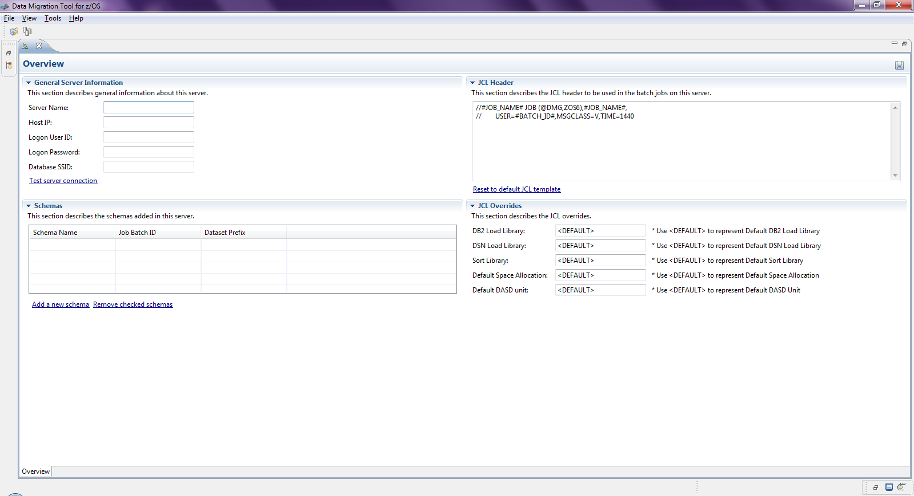
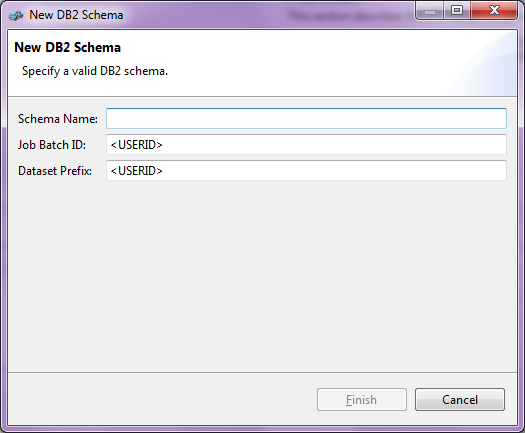
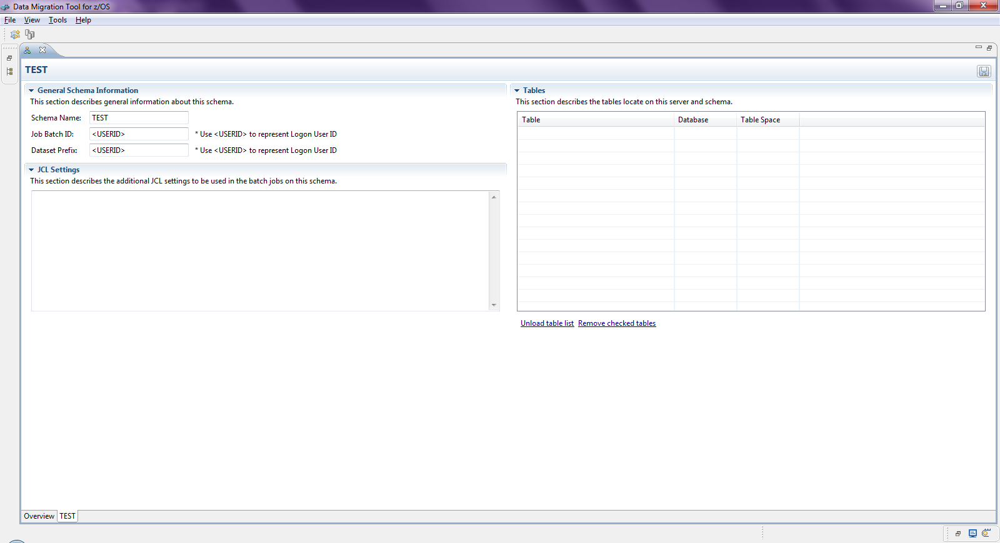

The server editor includes 1 or more tabs. The Overview tab is to define the basic server attributes.

By clicking the button Add a new schema, the DB2 schemas can also be added on the Overview tab.

The added DB2 schema can then be edited in its own tab.

By clicking the button Unload table list, the table list can be unloaded from the server directly.